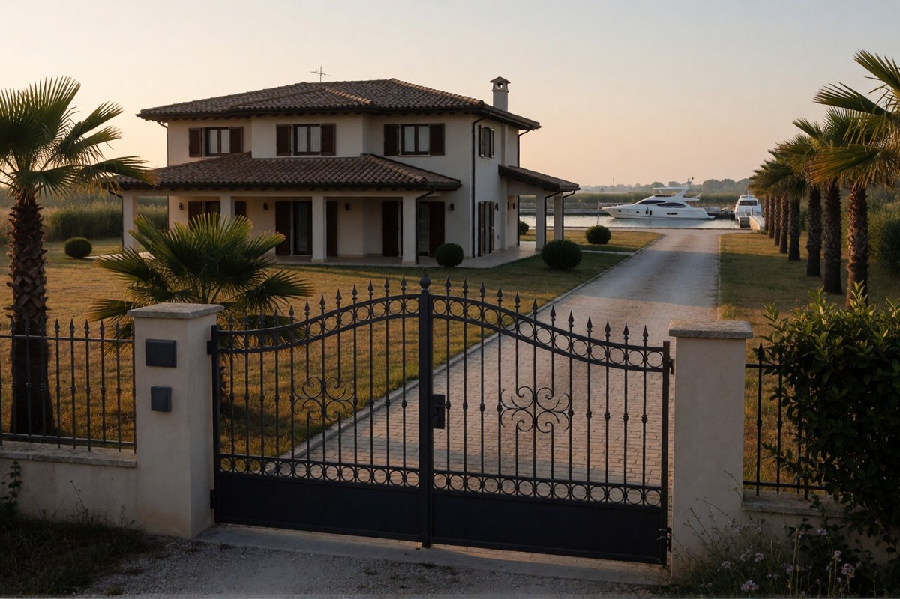

Mafia e antimafia · 26 novembre 2026
Casalesi, sequestro da oltre 28 milioni a un imprenditore di Casal di Principe

Aziende, più di cento immobili, conti, auto di lusso e barche fra Caserta e Latina. Il provvedimento è del Tribunale di Santa Maria Capua Vetere, su proposta dell'Antimafia di Napoli e della Questura.
di Franco Zanghì
Casal di Principe, provincia di Caserta: è il paese da cui prende il nome il clan dei Casalesi. Da qui viene l'imprenditore al quale, giovedì 26 novembre 2026, è stato notificato un sequestro di beni per un valore stimato in oltre 28 milioni di euro.
Hanno lavorato insieme la Divisione anticrimine della Questura di Caserta e il Nucleo di polizia economico-finanziaria della Guardia di Finanza di Caserta. Il provvedimento è della Sezione misure di prevenzione del Tribunale di Santa Maria Capua Vetere, su proposta della Direzione distrettuale antimafia di Napoli e della Questura di Caserta.
Che cosa è stato sequestrato
Complessi aziendali, più di cento immobili fra fabbricati e terreni, rapporti bancari e finanziari con le relative disponibilità liquide, auto di lusso e imbarcazioni da diporto. I beni si trovano fra la provincia di Caserta e quella di Latina, nel Lazio.
Secondo Cronache di, i complessi societari sono sette e i comuni interessati nel Casertano sono Casal di Principe, Villa Literno, Carinola, Falciano del Massico e Cellole, oltre al territorio pontino. Nel Lazio, riferisce La Cronaca di Latina, il sequestro comprende tre appartamenti a Gaeta, acquistati di recente da prestanome dell'imprenditore con l'intenzione di rimetterli sul mercato, e una società di comodo che operava nel settore della formazione.
Chi è l'imprenditore, e perché il sequestro
Ha 67 anni. Secondo le testate che hanno dato la notizia è già stato condannato per associazione di tipo mafioso, e gli investigatori lo ritengono legato alla fazione Schiavone del clan dei Casalesi.
La ragione del provvedimento è la sproporzione fra i redditi dichiarati da lui e dal suo nucleo familiare e il patrimonio accumulato negli anni: per l'accusa quei beni sarebbero il frutto del reimpiego di proventi illeciti. Edizione Caserta aggiunge che il sequestro colpisce anche beni formalmente intestati a familiari, ritenuti però nella effettiva disponibilità dell'imprenditore.
Secondo la ricostruzione di Gaeta.it, l'uomo ha dei precedenti: nel 2015 un sequestro da circa 2 milioni eseguito dal ROS nell'indagine «Azimut» della Direzione distrettuale antimafia di Napoli, e nel 2017 gli arresti domiciliari disposti dal Tribunale di Napoli Nord con l'accusa di essere intestatario fittizio di immobili per il clan. È una ricostruzione che compare in una sola delle fonti lette.
Che cos'è, e che cosa non è
Attenzione, perché qui la distinzione conta. Questa è una misura di prevenzione patrimoniale: non è una condanna e non è una confisca definitiva. È un sequestro finalizzato alla confisca, e sarà il Tribunale di Santa Maria Capua Vetere a decidere, sentite le difese, con la possibilità di impugnare.
Il nome dell'imprenditore è stato pubblicato da diverse testate, e circola in due grafie diverse. Qui non lo ripetiamo, e non nominiamo i familiari. Nelle fonti lette non risultano, alla data di pubblicazione, dichiarazioni della difesa.
E allora la domanda è questa: contro i clan, fa più male un arresto o un patrimonio portato via?
Fonti
- Teleclubitalia, «Camorra, maxi sequestro da 28 milioni di euro a imprenditore di Casal di Principe», 26 novembre 2026
- Ottopagine Caserta, «Colpo ai patrimoni dei Casalesi: sequestro da 28 milioni a imprenditore», 26 novembre 2026
- Edizione Caserta, «Scacco al clan: sequestro da 28 milioni tra aziende, auto e barche», 26 novembre 2026
- Gaeta.it, «Latina, sequestrati beni per 28 milioni a imprenditore 67enne», 26 novembre 2026
- Cronache di, «Casal di Principe, sequestro milionario: terreni, sette aziende, yacht e auto di lusso», 27 novembre 2026
- La Cronaca (Latina), «Tre appartamenti sequestrati a Gaeta ed un'azienda specializzata nella formazione», 27 novembre 2026
Dati provvisori alla data di pubblicazione: il valore dei beni è una stima di chi ha eseguito il provvedimento e il sequestro non è definitivo. Sull'età dell'imprenditore le fonti non coincidono: sei testate su sette indicano 67 anni, una ne indica 57; qui si riporta il dato prevalente. Soltanto una fonte quantifica in sette i complessi societari.
Questo articolo nasce dalla pagina Gli Eroi dell'Abisso, dove la stessa storia è raccontata in video.